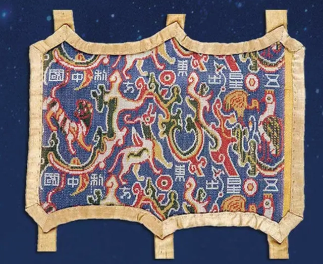

《多元一体的中华民族大家庭》
The big family of the Chinese nation in diversity and unity
新疆自古以来就是多民族聚居地区，目前共生活着56个民族，是中国民族成份最全的省级行政区之一，主要居住的有13个民族，为维吾尔、汉、哈萨克、蒙古、回、柯尔克孜、满、锡伯、塔吉克、达斡尔、乌孜别克、塔塔尔、俄罗斯等民族。截至2020年底，全区常住人口2585.23万人，少数民族人口占总人口的57.76%。
Xinjiang has been a multi-ethnic region since ancient times. Currently, there are 56 ethnic groups living in Xinjiang, making it one of the most ethnically diverse provincial-level administrative regions in China, with Uygur, Han, Kazak, Mongolian, Hui, Kirgiz, Manchu, Xibe, Tajik, Daur, Uzbek, Tatar, Russian and other ethnic groups. By the end of 2020, the region had a permanent population of 25.8523 million, with ethnic minorities accounting for 57.76 percent of the total.
多元一体的中华民族大家庭形成，多民族大一统的中国疆域开拓，是中国经济社会发展的历史必然。在中国统一的多民族国家的长期历史演进中，新疆各族人民同全国各族人民一道共同开拓了中国的辽阔疆土，共同缔造了多元一体的中华民族大家庭。
The formation of a diverse and unified Chinese nation and the expansion of China's territory are the historical inevitability of China's economic and social development.In the long history of China's unified multi-ethnic country, the people of all ethnic groups in Xinjiang, together with the people of all ethnic groups in the country, have opened up the vast territory of China and built the big family of the Chinese nation in diversity and unity.
In its long history, Xinjiang has experienced the great migration and integration of various ethnic groups, as well as the interaction and integration of various ideologies and cultures, which has provided fertile ground for the development of ideology, culture, science and technology. Xinjiang's ethnic languages, literature, translation, history, music, dance, architecture and other aspects have their own unique charm and characteristics.
 点击此处观看 《天山南北——中国新疆生活纪实》纪录片